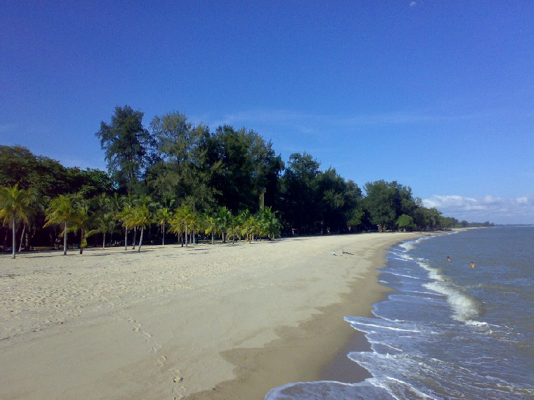

East Coast Park
East Coast Park is one of Singapore's most treasured urban getaways, offering an invigorating and exciting diversity of sporting, dining and recreational activities. With the theme “Recreation for All”, the park has an activity for everyone.
Families and friends can sit back, relax and enjoy picnics under the swaying coconut palms, Casuarinas and Ketapangs in the park. For those looking for action, there are myriad sporting activities such as beach volleyball, cycling, cable skiing and various water sports as well as an Xtreme SkatePark. The public restrooms in East Coast Park (at Areas B1, B2, C1, C4, D1, D5, F1, F2, G1 and G2) are equipped with shower facilities, so you can choose to wash up in the park if needed.
In the evenings, have a barbecue or indulge in sumptuous cuisines at the nearby hawker centre or restaurants while enjoying the cool sea breeze.
East Coast Park has a total land size of 185 hectares, and a scenic coastline that stretches over 15 km, and attracts a visitorship of more than seven million a year.
Things To Do
Cycling & Inline Skating
Cycling is an activity that many visitors to East Coast Park enjoy. Come with your own bicycle or you can rent one from the bicycle kiosks found within the park. If you enjoy skateboarding, stop by the Xtreme SkatePark@East Coast to try out the ramps there.
Barbecuing
Fancy cooking your own food and eating in the great outdoors? You can hold a barbecue at East Coast Park. There are some 80 BBQ pits located across the entire park. Click on the link below to book a barbecue pit.
Camping
There are designated areas (Areas D, excluding Cyclist Park, and G) within East Coast Park where you can set up a tent temporarily or overnight.
Dining
Looking to dine somewhere by the waterside? East Coast Park offers a wide range of dining options, from restaurants to cafes and even a food centre. Make a date with your family or friends, head on down to spend a day at the park and choose from one of the many dining options for dinner.
Fishing
An activity that park visitors enjoy is fishing, which can be done at the jetty. Come with your own rods and do remember to practise good fishing etiquette.
Children's Playground
The large playground at Marine Cove comprises of a range of play equipment suitable for children of varying ages, including a three-storey Play Tower modelled after a lighthouse!
Water Sports
Being situated close to the sea, there are a number of water sports that visitors can engage in. Those who enjoy water sports may want to try their hand at this.
How To Get There

Nearest Bus stops: 92289 (Marine Cove), 92191 (Opp CP C3), 92199 (Aft CP C4), 93181 (Opp CP C4), 93189 (Opp Victoria JC), 93179 (Island Resort S’pore), 93171 (Opp Island Resort S’pore), 93169 (Bef CP D5), 93161 (Bef CP E1), 93159 (Cable Ski Pk), 93151 (Opp Cable Ski Park), 92251 (Opp Parkland Green), 92261 (Opp Playground @ Big Splash), 91101 (Tg Katong Flyover), 91111 (CP B1)